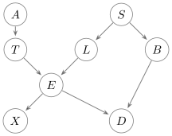
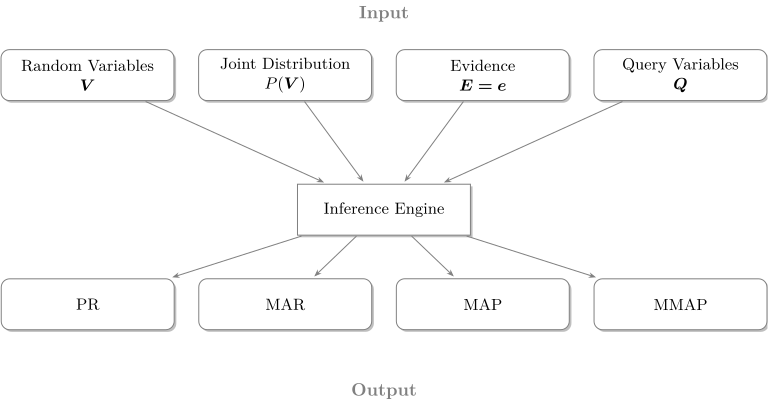

Background
TensorInference implements efficient methods to perform Bayesian inference in probabilistic graphical models, such as Bayesian Networks or Markov random fields. This page introduces probabilistic graphical models, provides an example using a Bayesian network, and explains what probabilistic inference is, including the different tasks it can involve.
Probabilistic graphical models
A probabilistic graphical model (PGM) is a mathematical framework that uses graphs to compactly represent complex multivariate statistical distributions. They are used to reason in the presence of uncertainty. This reasoning process is known as probabilistic inference and will be defined and discussed in detail later on.
Bayesian networks and Markov random fields are popular types of PGMs. The following PGM is an example of a Bayesian network called the ASIA network. It was introduced by Lauritzen in 1988 [lauritzen1988local].

| Random variable | Meaning |
|---|---|
| $A$ | Recent trip to Asia |
| $T$ | Patient has tuberculosis |
| $S$ | Patient is a smoker |
| $L$ | Patient has lung cancer |
| $B$ | Patient has bronchitis |
| $E$ | Patient hast $T$ and/or $L$ |
| $X$ | Chest X-Ray is positive |
| $D$ | Patient has dyspnoea |
This network represents a simplified example from the realm of medical diagnosis, illustrating the probabilistic relationships between various random variables that correspond to potential diseases, symptoms, risk factors, and test results. It comprises a graph $G = (\bm{V},\mathcal{E})$ and a probability distribution $P(\bm{V})$, where $G$ is a directed acyclic graph, $\bm{V}$ represents the set of variables, and $\mathcal{E}$ is the set of edges connecting these variables. We assume all variables are discrete. Each variable $V$ is quantified by a conditional probability distribution (CPD) $P(V \mid pa(V))$, where $pa(V)$ denotes the parent variables of V. Collectively, these conditional probability distributions, together with the graph G, induce a joint probability distribution over $P(\bm{V})$, given by
\[P(\bm{V}) = \prod_{V\in\bm{V}} P(V \mid pa(V)).\]
A factor, denoted as $\phi_{\bm{V}}$, is defined over a set of variables $\bm{V}$. It's a function that maps each instantiation $\bm{V} = \bm{v}$ to a non-negative number. It's important to note that a probability distribution is a specific case of a factor. The product of two factors, $\phi_{\bm{X}}$ and $\phi_{\bm{Y}}$, is another factor, $\phi_{\bm{Z}}$, where $\bm{Z} = \bm{X} \cup \bm{Y}$, and $\phi_{\bm{Z}}(\bm{z}) = \phi_{\bm{X}}(\bm{x})\phi_{\bm{Y}}(\bm{y})$ for the instantiations $\bm{x}$ and $\bm{y}$ that align with the instantiation $\bm{z}$. The marginalization of a factor $\phi_{\bm{Y}}$ into $\bm{X} \subseteq \bm{Y}$ results in a new factor $\phi_{\bm{X}}$, where each $\phi_{\bm{X}}(\bm{x})$ is calculated by summing the values of $\phi_{\bm{Y}}(\bm{y})$ for all $\bm{y}$ that are consistent with $\bm{x}$. Importantly, factor marginalization and product operations form the fundamental basis for conducting probabilistic inference in PGMs.
The inference tasks
Probabilistic inference is the process of determining the probability distribution of a set of unknown variables, given the values of known variables in a PGM. It encompasses several tasks that will be explained next.
Each task is performed with respect to a graphical model, denoted as $G = \{\bm{V}, \bm{D}, \bm{\phi}\}$, where:
$\bm{V} = \{ V_1 , V_2 , \dots , V_N \}$ is the set of the model’s variables
$\bm{D} = \{ D_{V_1} , D_{V_2} , \dots , D_{V_N} \}$ is the set of discrete domains for each variable, and
$\bm{\phi} = \{ \phi_1 , \phi_2 , \dots , \phi_N \}$ is the set of factors that define the joint probability distribution of the model.
The variable set $\bm{V}$ can be further partitioned into two subsets: the evidence variables $\bm{E}$ and the remaining variables $\bm{V}^\prime = \bm{V} \setminus \bm{E}$. Furthermore, within the set $\bm{V}^\prime$, the subset $\bm{Q}$ denotes the query variables. These are the variables for which we aim to estimate or infer values.

Probability of evidence (PR)
Computing the partition function (ie. normalizing constant) or probability of evidence:
\[PR(\bm{V}^{\prime} \mid \bm{E}=\bm{e}) = \sum_{V^{\prime} \in \bm{V}^{\prime}} \prod_{\phi \in \bm{\phi}} \phi(V^{\prime},\bm{e})\]
This task involves calculating the probability of the observed evidence, which can be useful for model comparison or anomaly detection. This involves summing the joint probability over all possible states of the unobserved variables in the model, given some observed variables. This is a fundamental task in Bayesian statistics and is often used as a stepping stone for other types of inference.
Marginal inference (MAR):
Computing the marginal probability distribution over all variables given evidence:
\[MAR(V_i \mid \bm{E}=\bm{e}) = \frac{ \sum_{V^{\prime\prime} \in \bm{V}^{\prime} \setminus V_i} \prod_{\phi \in \bm{\phi}} \phi(V^{\prime\prime},\bm{e}) }{ PR(\bm{V}^{\prime} \mid \bm{E}=\bm{e}) }\]
This task involves computing the marginal probability of a subset of variables, integrating out the others. In other words, it computes the probability distribution of some variables of interest regardless of the states of all other variables. This is useful when we're interested in the probabilities of some specific variables in the model, but not the entire model.
Maximum a Posteriori Probability estimation (MAP)
Computing the most likely assignment to all variables given evidence:
\[MAP(V_i \mid \bm{E}=\bm{e}) = \arg \max_{V^{\prime} \in \bm{V}^{\prime}} \prod_{\phi \in \bm{\phi}} \phi(V^{\prime},\bm{e})\]
In the MAP task, given some observed variables, the goal is to find the most probable assignment of values to some subset of the unobserved variables. It provides the states of variables that maximize the posterior probability given some observed evidence. This is often used when we want the most likely explanation or prediction according to the model.
Marginal Maximum a Posteriori (MMAP)
Computing the most likely assignment to the query variables, $\bm{Q} \subset \bm{V}^{\prime}$ after marginalizing out the remaining variables $\bm{Z} = \bm{V}^{\prime} \setminus \bm{Q}$, also known as hidden or latent variables:
\[MMAP(V_i \mid \bm{E}=e) = \arg \max_{Q \in \bm{Q}} \sum_{Z \in \bm{Z}} \prod_{\phi \in \bm{\phi}} \phi(Q, Z, e)\]
This task is essentially a combination of the MAR and MAP tasks. The MMAP task involves finding the most probable assignment (the MAP estimate) for a subset of the variables, while marginalizing over (summing out) the remaining variables. This task is useful when we want to know the most likely state of some variables, but there's some uncertainty over others that we need to average out.
- lauritzen1988localSteffen L Lauritzen and David J Spiegelhalter. Local computations with probabilities on graphical structures and their application to expert systems. Journal of the Royal Statistical Society: Series B (Methodological), 50(2):157–194, 1988.